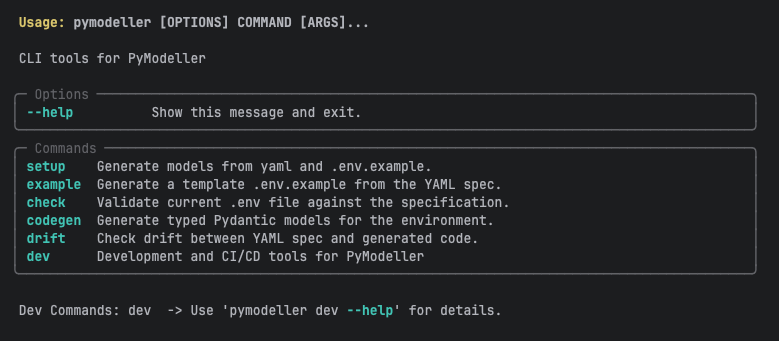

PyModeller
PyModeller is a DevOps-oriented CLI tool designed to synchronize infrastructure requirements with Python
application code. By utilizing a single YAML "Source of Truth," PyModeller automates the
generation of Pydantic models, Peewee ORM classes, and .env templates, ensuring your
configuration and database schemas never drift from your documentation.
Core Features
- Code Generation: Instant creation of typed Pydantic models or Peewee schemas from YAML.
- Traceable Settings: Automatically generates a
BaseTraceableSettingsclass. All settings inherit from this, enabling data source tracking and native YAML loading capabilities. - Environment Templates: Auto-generate
.env.examplefiles for seamless developer onboarding. - Validation & Safety: Verify local
.envfiles against specifications to catch errors before runtime. - Drift Detection: Identify discrepancies between your YAML definitions and existing Python code.
Project Initialization & Core Models
By default, PyModeller looks for a py_modeller.yaml file in the root of your project. This file must contain two main sections: config and sections.
The 'General' Section
For Pydantic model generation, it is required to define a section named General. This section is used to generate the general_setting class, which serves as the primary configuration entry point.
* Centralized Access: This allows you to import the global configuration state from anywhere in your application.
* Project Metadata: It typically holds flags like LOCAL_DEV, N_THREADS, or global API keys.
Installation
Install the package using uv or pip:
uv add pymodeller
Usage
The CLI provides four main commands to manage your development workflow:
1. Generate models
Generate typed Pydantic models or Peewee code for your project.
pymodeller codegen
2. Example Environment Generation
Generate a template .env.example file based on your YAML specification to help collaborators set up their environment.
pymodeller example
3. Environment Check
Validate your current .env file against the YAML specification to ensure all required variables are present and correctly formatted.
pymodeller check
4. Drift Detection
Check for "drift" between your YAML specification and the code already generated. This ensures that your Python models haven't fallen out of date.
pymodeller drift
CLI Command Reference

Data Loading & Specification
The project uses a structured YAML-to-Object mapping to manage environment variables and database schemas. The py_modeller.yaml acts as the Single Source of Truth, which is parsed into an EnvSpec instance.
Environment Data Model Specification (YAML)
This document defines the schema for the py_modeller.yaml file. This file is used by the loader.py to generate typed
Python dataclasses and manage environment variables, settings, and database schemas.
Validation
The loading process includes a mandatory validate_no_duplicates() call which ensures: 1. No two environment variables share the same env_name. 2. No two Python attributes (aliases) collide within the same section.
## Technical Specification
BaseTraceableSettings
Every generated settings class inherits from BaseTraceableSettings. This core class provides:
* Source Tracking: Maintains a record of where each setting value originated (Environment, YAML, or Default).
* YAML Loader: Built-in methods to populate settings directly from structured YAML files.
1. Global Config (config)
Defines the output paths for generated files.
| Key | Description |
|---|---|
PYDANTIC_OUT |
Main file path for Pydantic models. |
PYDANTIC_FOLDER |
Directory for individual Pydantic model files. |
PEEWEE_OUT |
Main file path for the Peewee ORM models. |
PEEWEE_FOLDER |
Directory for individual ORM model files. |
2. Root Structure
The YAML must contain a top-level sections key which is a list of environment groups.
sections:
- name: "ExampleSection"
variables: []
3. Section Schema (EnvSection)
| Key | Type | Description |
|---|---|---|
name |
string |
Required. The display name of the section. |
description |
string |
Brief explanation of the section's purpose. |
env_prefix |
string |
Prefix added to all variables in this section (e.g., APP_). |
type |
string |
Section category: settings, model, or peewee (Default: model). |
include_general |
boolean |
Whether to include general configurations (Default: true). |
include_literal |
boolean |
Used for FastAPI/literal exports (Default: true). |
database |
object |
Optional. Metadata for Database tables (See DBSpec). |
variables |
list |
A list of variable definitions (See EnvVarSpec). |
4. Variable Specification (EnvVarSpec)
| Key | Type | Description |
|---|---|---|
name |
string |
Required. The variable name (automatically converted to snake_case in Python). |
type |
string |
Data type mapping (See Supported Types). |
description |
string |
Documentation for the variable. |
default |
any |
Default value if the environment variable is not set. |
required |
boolean |
If true, the loader validates its existence. |
secret |
boolean |
If true, masks the value in logs (Type secret is a shortcut). |
alias |
string |
Custom Python attribute name (Defaults to camelCase of name). |
db_spec |
object |
Optional. ORM field configuration (See DBField). |
Supported Types
The loader normalizes the following types:
- Primitives: string, integer, number (float), boolean, datetime.
- Special: secret (shortcut for str + secret: true), path, list.
- Numpy Arrays: pnd.NpNDArrayUint8, pnd.NpNDArrayInt8, pnd.NpNDArrayFp32.
Note: We are actively working on expanding this list to support additional data types and specialized structures in future releases.
5. Database Specification (DBSpec)
Defined at the section level for Peewee/ORM metadata.
| Key | Type | Description |
|---|---|---|
table_name |
string |
Explicit name for the database table. |
schema |
string |
Database schema (e.g., public). |
primary_key |
list |
List of field names that form a composite primary key. |
indexes |
list |
Custom database index definitions. |
constraints |
list |
Table-level constraints. |
6. Database Field Specification (DBField)
Defined under the db_spec key within a variable.
| Key | Type | Description |
|---|---|---|
primary_key |
boolean |
Marks the field as the primary key. |
allow_null |
boolean |
Allows NULL values in DB (Default: false). |
unique |
boolean |
Adds a UNIQUE constraint. |
max_length |
integer |
Max characters for string fields. |
foreign_key |
string |
Reference to another model/table. |
choices |
list |
Enforces a list of allowed string values. |
max_digits |
integer |
Precision for decimal numbers. |
decimal_places |
integer |
Scale for decimal numbers. |
Example Usage
sections:
- name: "Network"
env_prefix: "NET"
type: "settings"
variables:
- name: "host_address"
type: "string"
default: "0.0.0.0"
alias: "serverHost"
- name: "UsersTable"
type: "peewee"
database:
table_name: "app_users"
variables:
- name: "id"
type: "integer"
db_spec:
primary_key: true
- name: "api_key"
type: "secret"
required: true
Contributing
Contributions are welcome! We value your help in making PyModeller better.
Before you get started, please refer to our Contributing Guide for details on our development workflow, coding standards, and how to submit pull requests.
If you encounter a bug or have a feature request, feel free to open an issue.
License
This project is licensed under the MIT License.